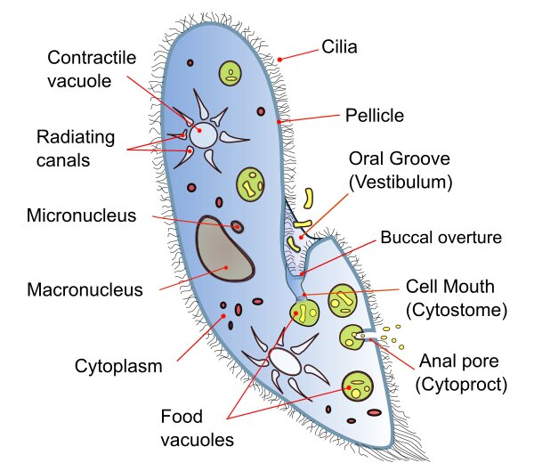

Protozoa

Protozoa are a diverse group of single-celled eukaryotic microorganisms belonging to the kingdom Protista. They inhabit a wide range of terrestrial and aquatic environments, including soil, freshwater, marine habitats, and the bodies of other organisms. Protozoa exhibit a remarkable diversity of forms, lifestyles, and ecological roles, playing important roles as predators, scavengers, and symbionts in various ecosystems.
Key Characteristics
- 1. Eukaryotic Structure: Protozoa are eukaryotic organisms, meaning they possess membrane-bound organelles and a distinct nucleus containing their genetic material. They exhibit a wide range of cell shapes and sizes, from microscopic unicellular forms to larger colonial or multicellular species.
- 2. Motility: Many protozoa are motile and possess specialized structures such as flagella, cilia, or pseudopodia for movement. Motility allows protozoa to actively search for food, escape predators, and navigate through their environment.
- 3. Heterotrophic Nutrition: Protozoa are primarily heterotrophic, meaning they obtain nutrients by ingesting organic matter or other organisms. They exhibit various feeding strategies, including phagocytosis (engulfing food particles), absorption, and parasitism.
Classification
Protozoa are classified into several phyla based on their locomotive structures, reproductive strategies, and ecological characteristics:
- Sarcomastigophora: This phylum includes protozoa with locomotive structures such as flagella (e.g., Trypanosoma) or pseudopodia (e.g., Amoeba).
- Ciliophora: Ciliates are protozoa characterized by the presence of numerous cilia used for movement and feeding. Examples include Paramecium and Stentor.
- Sporozoa: Sporozoans are typically parasitic protozoa that produce spores during some phase of their life cycle. Examples include Cryptosporidium and Eimeria.
Habitat and Adaptations
Protozoa inhabit diverse habitats and exhibit various adaptations:
- Aquatic Environments: Many protozoa are found in freshwater and marine habitats, where they play important roles in nutrient cycling, food webs, and ecosystem dynamics. Some protozoa are adapted to extreme environments such as hot springs or hypersaline lakes.
- Soil: Protozoa are abundant in soil ecosystems, where they contribute to nutrient cycling, organic matter decomposition, and microbial interactions. They play important roles in maintaining soil fertility and ecosystem health.
- Hosts: Some protozoa live as symbionts or parasites in the bodies of other organisms, including animals, plants, and even other microorganisms. Parasitic protozoa can cause diseases in humans and animals, posing significant public health concerns.
Ecological and Economic Importance
- Nutrient Cycling: Protozoa play important roles in nutrient cycling and energy flow in ecosystems by decomposing organic matter, recycling nutrients, and transferring energy between trophic levels.
- Predation and Grazing: Protozoa are important predators of bacteria, algae, and other microorganisms, regulating their populations and influencing community structure and dynamics.
- Bioremediation: Some protozoa have the ability to degrade pollutants and contaminants in the environment, making them valuable for bioremediation of polluted soil, water, and sediments.
Conservation Challenges
Protozoa face threats from habitat loss, pollution, climate change, and emerging infectious diseases. Conservation efforts focus on preserving natural habitats, reducing pollution, promoting sustainable land management practices, and studying the ecological roles and diversity of protozoa in different ecosystems.